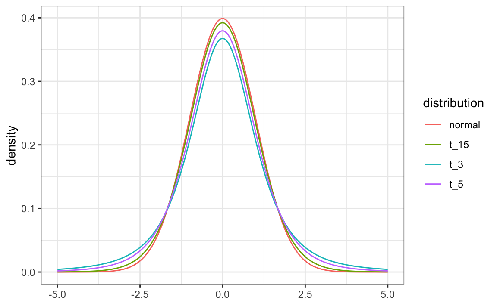

library(tidyverse)
library(behdslabs)
ux_scores |>
group_by(device) |>
summarize(n = n(), average = mean(ux_score), sd = sd(ux_score))
#> # A tibble: 2 × 4
#> device n average sd
#> <fct> <int> <dbl> <dbl>
#> 1 desktop 812 59.1 11.1
#> 2 mobile 238 45.7 11.524 Comparing Two Groups: the t-test and the Wilcoxon Test
Draft
This chapter is a draft, written with an AI assistant (Claude) on 14 October 2026 for Part 2 and moved to this part on 29 October 2026, and not yet reviewed by the instructor. It may be substantially rewritten or removed.
Many questions in behavioural research compare two groups or two conditions. Do users rate an app differently on desktop and on mobile? Is engagement higher with a redesigned interface than with the standard one? Are responses slower when the colour of a word conflicts with its meaning? In each case, we have a continuous outcome measured in two groups, and we want to know whether the difference we see in our sample reflects a real difference in the population or could have been produced by chance.
In Part 2 of this book, in the chapters on estimates and confidence intervals and hypothesis testing, we build confidence intervals and p-values for a proportion. In this chapter, we apply the same ideas to the difference between two averages. This leads to the two tests you will meet most often in psychology papers: the t-test, which compares means, and the Wilcoxon test, which compares ranks and is the usual choice when the data are skewed, contain outliers, or are only ordinal.
This chapter is original material written for this book; it is not part of Irizarry’s Introduction to Data Science.
24.1 The difference between two averages
We start with the UX questionnaire scores of desktop and mobile users that we explored in Chapter 7:
Desktop users score, on average, 13.4 points higher. Our parameter of interest is now the difference between the two population averages, \(\mu_1 - \mu_2\), and our estimate is the difference between the two sample averages, \(\bar{X}_1 - \bar{X}_2\).
Just as for a proportion, the estimate is a random variable: another sample of users would give a different difference. Using the rules for sums of independent random variables (see Random Variables in Part 2), the standard error of the difference is
\[ \mathrm{SE}[\bar{X}_1 - \bar{X}_2] = \sqrt{\frac{\sigma_1^2}{N_1} + \frac{\sigma_2^2}{N_2}}, \]
where \(\sigma_1\) and \(\sigma_2\) are the standard deviations in the two populations. We don’t know them, so we plug in the sample standard deviations \(s_1\) and \(s_2\):
se_hat <- sqrt(ux_sum$sd[1]^2/ux_sum$n[1] + ux_sum$sd[2]^2/ux_sum$n[2])
se_hat
#> [1] 0.841With samples this large, the Central Limit Theorem tells us that \(\bar{X}_1 - \bar{X}_2\) is approximately normal, and we can build a 95% confidence interval exactly as before:
ux_diff + c(-1.96, 1.96) * se_hat
#> [1] 11.7 15.0The interval is far from 0: with 1050 users, there is little doubt that desktop users rate the app higher.
24.2 The t-distribution
In psychology, samples are often much smaller than this. A lab study may test 15 or 20 participants per group. With small samples, plugging in \(s\) for \(\sigma\) adds extra variability that the normal approximation ignores. The statistic we use,
\[ t = \frac{\bar{X}_1 - \bar{X}_2}{\sqrt{s_1^2/N_1 + s_2^2/N_2}}, \]
is called a t-statistic. If the data in each group are approximately normal, theory tells us that \(t\) follows a Student’s t-distribution. Like the normal, the t-distribution is bell-shaped and centred at 0, but it has heavier tails. How heavy depends on a number called the degrees of freedom (df), which grows with the sample size:

Heavier tails mean that values far from 0 are more likely, so intervals must be wider. Instead of 1.96, we multiply the standard error by a quantile of the t-distribution, which we compute with qt():
qt(0.975, df = c(3, 5, 15, 30, 100))
#> [1] 3.18 2.57 2.13 2.04 1.98For a few degrees of freedom, the multiplier is well above 1.96; by about 30, it is close; for large samples, the t-distribution and the normal are practically the same. This is why the t-distribution matters most exactly where behavioural studies often are: small samples.
The t-distribution requires the data in each group to be approximately normal. With large samples, the Central Limit Theorem makes this assumption much less important, because the averages are approximately normal anyway. With small samples and skewed data, such as reaction times, the assumption matters, and the rank-based tests later in this chapter are a safer choice.
24.3 The t-test in R
The function t.test() computes the t-statistic, its degrees of freedom, the p-value for the null hypothesis that the two population means are equal, and a confidence interval for the difference:
t.test(ux_score ~ device, data = ux_scores)
#>
#> Welch Two Sample t-test
#>
#> data: ux_score by device
#> t = 16, df = 374, p-value <2e-16
#> alternative hypothesis: true difference in means between group desktop and group mobile is not equal to 0
#> 95 percent confidence interval:
#> 11.7 15.0
#> sample estimates:
#> mean in group desktop mean in group mobile
#> 59.1 45.7The formula ux_score ~ device reads “UX score as a function of device”: the outcome goes on the left, the grouping variable on the right. The output shows the two group means, the confidence interval for their difference, and a p-value so small that R prints it in scientific notation.
By default, R runs Welch’s t-test, which does not assume that the two groups have the same standard deviation. This is the version we recommend; the classic Student’s t-test, which assumes equal variances, is obtained with var.equal = TRUE.
To see why sample size matters, suppose we had run a small lab study with only 15 users per device:
set.seed(2026)
ux_small <- ux_scores |>
group_by(device) |>
slice_sample(n = 15) |>
ungroup()
t.test(ux_score ~ device, data = ux_small)
#>
#> Welch Two Sample t-test
#>
#> data: ux_score by device
#> t = 0.8, df = 17, p-value = 0.4
#> alternative hypothesis: true difference in means between group desktop and group mobile is not equal to 0
#> 95 percent confidence interval:
#> -6.93 15.66
#> sample estimates:
#> mean in group desktop mean in group mobile
#> 52.3 48.0The same population difference is there, but the confidence interval, from -6.9 to 15.7, now includes 0, and the p-value is 0.43. This is the lack of power described in Hypothesis Testing in Part 2: a small study can easily miss a real difference. A p-value above 0.05 does not show that the groups are the same; it only shows that this study could not tell.
24.4 Paired designs
So far, the two groups contained different people: a between-subjects design. In many experiments, the same participants are measured in both conditions: a within-subjects design (see Experimental Designs in Psychology in Part 2). In a Stroop task, for example, each participant responds to congruent trials (the word red printed in red) and incongruent trials (the word red printed in green). The following data are simulated: each of 20 participants has their own overall speed, and incongruent trials add some extra time.
set.seed(10)
n <- 20
speed <- rnorm(n, 500, 80)
stroop <- data.frame(participant = sprintf("P%02d", 1:n),
congruent = round(speed + rnorm(n, 0, 20)),
incongruent = round(speed + 30 + rnorm(n, 0, 20)))
head(stroop)
#> participant congruent incongruent
#> 1 P01 490 553
#> 2 P02 442 500
#> 3 P03 377 404
#> 4 P04 410 499
#> 5 P05 498 534
#> 6 P06 524 561Participants differ a lot from each other in overall speed, but each participant is slower on incongruent trials. The two measurements of the same person are not independent, so the two-sample formula above does not apply. Instead, we compute each participant’s difference and test whether the average difference is 0. This is the paired t-test:
t.test(stroop$incongruent, stroop$congruent, paired = TRUE)
#>
#> Paired t-test
#>
#> data: stroop$incongruent and stroop$congruent
#> t = 10, df = 19, p-value = 9e-09
#> alternative hypothesis: true mean difference is not equal to 0
#> 95 percent confidence interval:
#> 37.3 57.9
#> sample estimates:
#> mean difference
#> 47.6Compare it with what we would get if we wrongly treated the two columns as independent groups:
t.test(stroop$incongruent, stroop$congruent)
#>
#> Welch Two Sample t-test
#>
#> data: stroop$incongruent and stroop$congruent
#> t = 2, df = 38, p-value = 0.03
#> alternative hypothesis: true difference in means is not equal to 0
#> 95 percent confidence interval:
#> 4.44 90.76
#> sample estimates:
#> mean of x mean of y
#> 528 480The paired confidence interval, from 37 to 58 ms, is much narrower than the unpaired one, from 4 to 91 ms. Pairing removes the large differences between people from the comparison, leaving only the differences between conditions within each person. This is the main statistical advantage of within-subjects designs, and the reason the analysis must match the design.
24.5 When the data are not normal: the Wilcoxon test
The t-test compares means, and means are sensitive to skewed distributions and outliers (Chapter 22). Reaction times are a typical case: there is a floor below which no one can respond, and a long tail of slow responses, including occasional lapses of attention. Let’s take a small sample of 20 participants per group from reaction_times:
set.seed(3)
rt_small <- reaction_times |>
group_by(sex) |>
slice_sample(n = 20) |>
ungroup()
t.test(rt_ms ~ sex, data = rt_small)$p.value
#> [1] 0.00216Now suppose that one participant had a lapse of attention and their reaction time was recorded as 2,500 ms:
rt_lapse <- rt_small
rt_lapse$rt_ms[which(rt_lapse$sex == "Male")[1]] <- 2500
t.test(rt_ms ~ sex, data = rt_lapse)$p.value
#> [1] 0.589A single value changed the conclusion completely: the lapse inflates both the mean and the standard deviation of one group.
The Wilcoxon rank-sum test, also known as the Mann–Whitney test, avoids this problem by replacing each value with its rank: the smallest value gets rank 1, the next rank 2, and so on, across both groups. The test then asks whether the ranks in one group tend to be higher than in the other. A lapse of 2,500 ms gets the highest rank, but it is just one rank higher than the next-slowest response, so it cannot dominate the result:
wilcox.test(rt_ms ~ sex, data = rt_small)$p.value
#> [1] 0.00143
wilcox.test(rt_ms ~ sex, data = rt_lapse)$p.value
#> [1] 0.00948Because it uses only the order of the values, the Wilcoxon test is also appropriate for ordinal data, such as single Likert items, where the distance between “agree” and “strongly agree” is not known (see Measurement in Psychology in Part 2). The ceiling example in that chapter shows a case where a t-test and a Wilcoxon test disagree for exactly this reason.
The Wilcoxon rank-sum test is often described as a “test of medians”. This is not quite right: it tests whether values in one group tend to be larger than values in the other. Only when the two distributions have the same shape and differ by a shift is this the same as a difference in medians.
For paired data, the corresponding test is the Wilcoxon signed-rank test, which ranks the within-person differences:
wilcox.test(stroop$incongruent, stroop$congruent, paired = TRUE, exact = FALSE)
#>
#> Wilcoxon signed rank test with continuity correction
#>
#> data: stroop$incongruent and stroop$congruent
#> V = 210, p-value = 1e-04
#> alternative hypothesis: true location shift is not equal to 0We use exact = FALSE because some participants have identical differences (ties), and with ties R uses a normal approximation instead of the exact distribution.
24.6 Which test?
The choice depends on two questions: are the observations in the two conditions from different people or from the same people, and is it reasonable to compare means?
| Design | Means are reasonable (roughly normal data, or large samples, no extreme outliers) | Skewed data, outliers, small samples, or ordinal data |
|---|---|---|
| Two independent groups (between-subjects) | Welch’s t-test: t.test(y ~ group) |
Wilcoxon rank-sum: wilcox.test(y ~ group) |
| Same participants in both conditions (within-subjects) | Paired t-test: t.test(x1, x2, paired = TRUE) |
Wilcoxon signed-rank: wilcox.test(x1, x2, paired = TRUE) |
Whatever the test, look at the data first (Chapter 7): a histogram or a boxplot per group shows skew and outliers immediately. And decide which test to use before seeing the results: running several tests and reporting the one with the smallest p-value makes the p-value meaningless.
24.7 Effect size
A p-value tells us whether a difference could be due to chance, not whether it is large. With enough participants, even a tiny difference gets a tiny p-value. Always report the size of the difference, with its confidence interval, in the units of the outcome: “desktop users score 13.4 points higher on a 100-point scale” is more informative than “p < 0.001”.
When outcomes are measured on arbitrary scales, the difference is often divided by the standard deviation to give Cohen’s d:
\[ d = \frac{\bar{X}_1 - \bar{X}_2}{s_{\text{pooled}}}, \quad s_{\text{pooled}} = \sqrt{\frac{(N_1 - 1)s_1^2 + (N_2 - 1)s_2^2}{N_1 + N_2 - 2}} \]
s_pooled <- with(ux_sum, sqrt(((n[1] - 1)*sd[1]^2 + (n[2] - 1)*sd[2]^2)/(sum(n) - 2)))
ux_diff / s_pooled
#> [1] 1.2A difference of about 1.2 standard deviations is large by the usual rules of thumb (0.2 small, 0.5 medium, 0.8 large), which are, like the 0.05 threshold, conventions rather than laws.
24.8 Further reading
- D. Navarro, Learning Statistics with R, Chapter 13, The t-test: one-sample, independent and paired t-tests, Welch’s test, effect sizes, the Wilcoxon tests.
- R. A. Poldrack, Statistical Thinking for the 21st Century, Comparing means, including the t-test as a linear model.
- D. Lakens, Improving Your Statistical Inferences, Chapter 6, Effect Sizes and Chapter 7, Confidence Intervals.
24.9 Exercises
1. The app_engagement_experiment dataset compares a redesigned interface with the standard one. Compute the number of users, the average and the standard deviation of engagement_score for each ui_version.
2. Use t.test() to compare engagement_score between the two versions. Report the difference in means with its 95% confidence interval, in a sentence a product manager would understand.
3. Make a boxplot of engagement_score by ui_version. Based on the plot, is a t-test reasonable here? Run wilcox.test() as well. Do the two tests lead to the same conclusion?
4. Take a random sample of 10 users per version (use set.seed(1) and slice_sample()), and repeat the t-test. Repeat this 1,000 times and compute the proportion of samples in which the p-value is below 0.05. What does this proportion estimate?
5. Using the stroop data from this chapter, compute the difference incongruent - congruent for each participant and run a one-sample t-test on the differences with t.test(differences). Compare the result with the paired t-test. What do you notice?
6. Using rt_lapse from this chapter, compute the mean and the median reaction time per group, with and without the lapse. Explain why the t-test and the Wilcoxon test react so differently to the lapse.
7. Compute Cohen’s d for the comparison in exercise 2. Is the effect small, medium, or large by the usual rules of thumb?